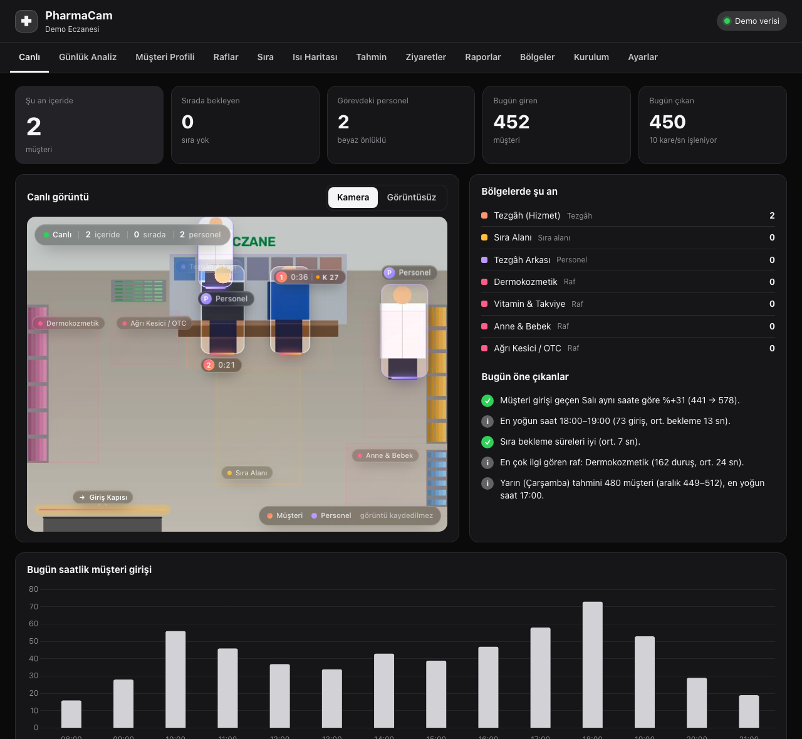

Günlük rapor
Her akşam masanızda,
Her akşam masanızda,
4 sayfalık bir özet.
Günün göstergeleri, sıra ve personel analizi, raflar ve ısı haritası, yarın için tahmin. Otomatik.


Kaç müşteri geldi, sırada ne kadar beklendi, hangi raf ilgi gördü, yarın kaç kişi gelecek? PharmaCam hepsini tek bir küçük kamerayla ölçer. Hiçbir görüntüyü kaydetmez.

Raspberry Pi 5'te bir karenin analiz süresi
diske yazılan görüntü. Yalnızca sayılar saklanır
giriş, sıra, raf, ısı, personel, tahmin…
simülasyon testlerinde kapı giriş doğruluğu
Kamera kapıyı, rafları ve sırayı nasıl ölçer, görüntü neden hiç kaydedilmez? Hepsi tek bir filmde.
Tahmin yürütmeyi bırakın. Personel planını, raf düzenini ve kampanyaları gerçek verilere göre yapın.
Saat saat giren ve çıkan müşteri, geçen haftanın aynı günüyle karşılaştırmalı.
Saatlik bekleme süresi, en uzun sıra, hizmet almadan ayrılan müşteriler.
Rafın önünden geçenlerin kaçı duruyor, ne kadar kalıyor?
7 günlük saatlik müşteri tahmini ve tezgâh için personel önerisi.
Tüm analiz cihazın içinde, gerçek zamanlı yapılır. Panel telefon, tablet ve bilgisayarda çalışır.
Kapıdaki sanal çizgiyi yönüyle geçen herkes sayılır. Kapıda takibi kopan kişiler çift sayılmaz.
Sıra uzunluğu, bekleme ve hizmet süresi, vazgeçenler.
Her raf için duruş, geçiş ve durma oranı. Teşhirin işe yarayıp yaramadığını görün.
Müşterilerin en çok vakit geçirdiği alanlar.
Şu an içeride kaç müşteri var? Görünen kişiler ve kapı sayacı birlikte, kendini düzelterek.
Eczacı ve teknisyenler otomatik tanınır, müşteri istatistiklerine katılmaz. Görevdeki personel ayrıca izlenir.
Önümüzdeki 7 gün için saatlik müşteri tahmini, güven aralığı ve tezgâh personeli önerisi.
Her ziyaretin süresi, gezdiği raflar, sıra ve hizmet süresi kaydedilir. Kimlik bilgisi tutulmaz. Kayıtlar CSV olarak dışa aktarılabilir.
Kapanışta otomatik hazırlanır: günün göstergeleri, grafikler, raf tablosu, ısı haritası ve yarın için tahmin.
Sony IMX500 sensörü kişileri kendi çipinde tespit eder. Dışarıya yalnızca sayılar ve süreler gider.
Raspberry Pi AI Camera, her karede kişileri çip üzerinde tespit eder.
Raspberry Pi 5 kişileri anonim numaralarla takip eder; kapı, sıra, tezgâh ve raf bölgelerini ölçer.
Canlı panel, geçmiş analizler, tahminler ve PDF raporlar. Tüm şubeleriniz tek merkezde.
Görüntüler gerçek panelden alındı. Canlı demoda hepsini kendiniz gezebilirsiniz.
Günün göstergeleri, sıra ve personel analizi, raflar ve ısı haritası, yarın için tahmin. Otomatik.
Eczane hassas bir ortamdır. PharmaCam gizliliği sonradan eklenmiş bir özellik olarak değil, tasarımın temeli olarak ele alır.
Kurulum, montaj ve eğitim dahil. Fiyat için kısa bir görüşmeyle eczanenizi tanıyıp size özel teklif hazırlıyoruz.
Önce görmek isteyenler için
Tek şubeli eczaneler için
Birden fazla eczane için
Hayır. Kişi tespiti kameranın kendi çipinde yapılır ve görüntü diske yazılmaz. Saklanan veriler yalnızca sayılar ve sürelerdir. Panelde canlı görüntü isteğe bağlıdır ve açıkken kişiler bulanıklaştırılır.
Tadilat gerekmez. Cihaz tavana veya duvarın üst köşesine monte edilir, bir prize ve internete bağlanır. Yazılım kurulumu tek komutla yaklaşık 15 dakika sürer. Bölgeleri birlikte panelde çizeriz.
Cihaz internetsiz de tam çalışır, tüm veriyi kendi içinde saklar. Merkez panele gönderilecek veriler kuyrukta bekler ve bağlantı gelince eksiksiz aktarılır.
Beyaz önlük oranı ve tezgâh arkasında geçen süre birlikte değerlendirilir. Personel, müşteri istatistiklerine katılmaz; görevdeki personel sayısı ayrıca gösterilir.
Evet. Zincir paketindeki merkez panel tüm şubelerin anlık doluluğunu, sırasını ve günlük müşteri sayılarını tek ekranda gösterir.
Canlı demoyu hemen gezebilirsiniz. Kendi eczanenizde görmek isterseniz 2 haftalık pilot kurulum için bize ulaşın.
Ücretsiz keşif görüşmesinde eczanenizin yerleşimine bakalım, size uygun kurulumu ve teklifi hazırlayalım.